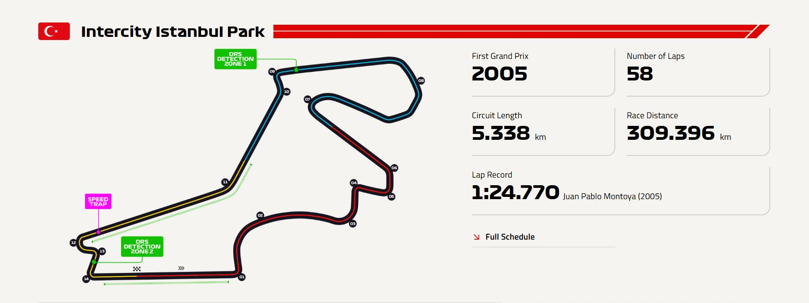

| Özellik | Değer |
|---|---|
| Pist uzunluğu | 5.338 km (3.317 mil) |
| Tur sayısı | 58 tur |
| Toplam yarış mesafesi | 309.396 km (192.250 mil) |
| Viraj sayısı | 14 (8 sağ, 6 sol) |
| DRS bölgeleri | 1 (start-finish düzlüğünde) |
| En hızlı tur | 1:24.770 – Juan Pablo Montoya (2005 – yarış turu) |
| Saat yönü: | Saat yönünün tersine dönen nadir pistlerden biri |